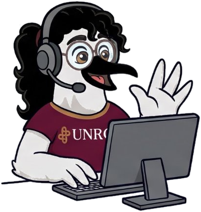

Aplicaciones de Apoyo

En este lugar podrás encontrar las aplicaciones realizadas para tu formación.
Modelo de Toulmin
→
Simulador Persona en Crisis
→
Prueba TIC, TAC, TEPS
→
Sombreros para pensar
→
Modelo Gunawardena
→
Pensamientos
→
Elementos del emprendimiento social
→
Conceptos clave innovasión social
→
Técnicas de Diseño de Análisis
→
← Volver